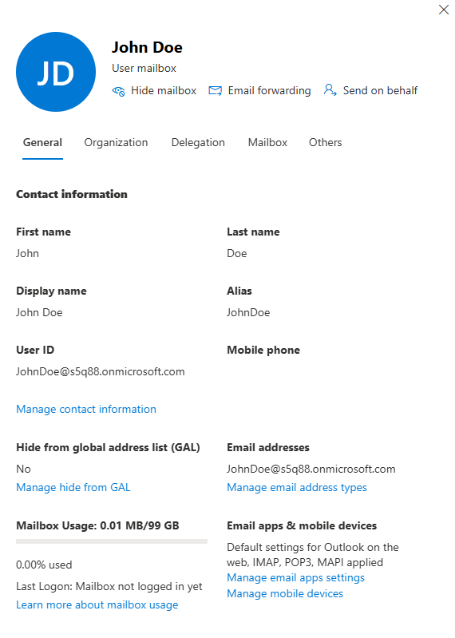
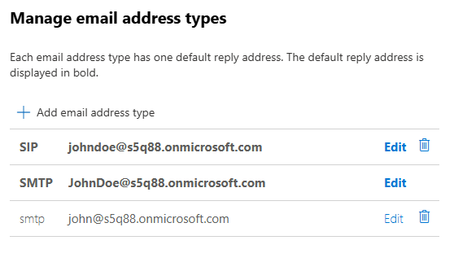
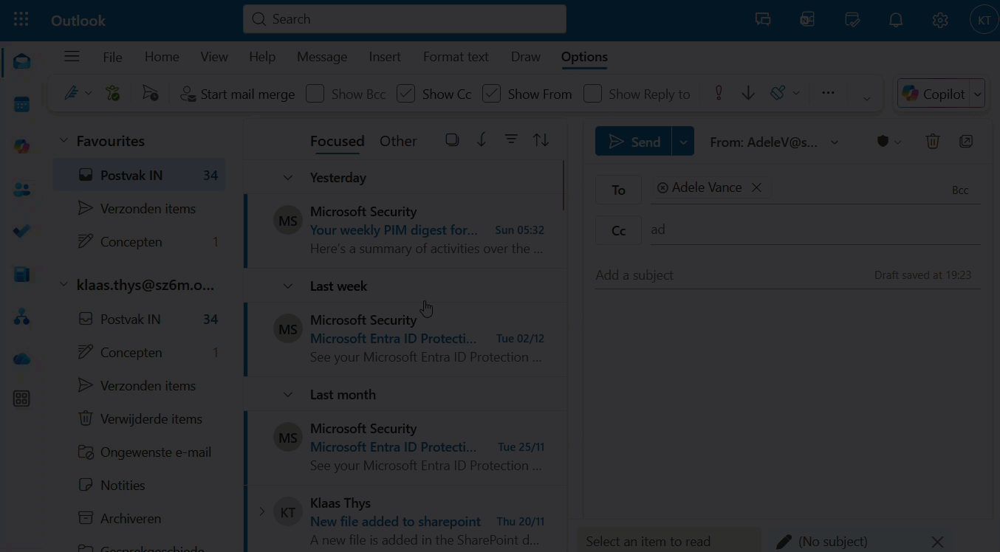

Mailboxbeheer in Exchange Online
1. Gebruikers - e-mail
Wanneer je via Entra ID of via het Microsoft admin center een nieuwe gebruiker aanmaakt, wordt automatisch een mailbox aangemaakt. Alle e-mails worden opgeslagen op de Exchange Online-server. Gebruikers kunnen hun mail openen door via Outlook in Microsoft 365 Copilot of via eender welke mailclient met de Exchange Online-server te verbinden. Alle mailinstellingen van een gebruiker kunnen beheerd worden via het Exchange Admin Center: https://admin.exchange.microsoft.com
2. Mail contacts
Mail contacts hebben geen Entra-account. Ze worden enkel gebruikt om informatie op te slaan die in het adresboek verschijnt.
Zo maak je een mail contact aan:
- Ga naar EAC > Recipients > Contacts > Add a mail contact.
- Vul in:
- First name, Last name, Initials
- Display name (wordt weergegeven in het adresboek)
- Alias en External email address
- Voeg eventueel meer details toe.
- Klik op Next > Create.
Zo test je een mail contact
Nadat je een mail contact hebt aangemaakt, moet je controleren of het correct werkt.
Het adresboek controleren
- Open Outlook (web of desktop)
- Ga naar People of open een nieuwe e-mail
- Klik op To
- Zoek naar de naam van het mail contact
✅ Controleer:
- Het contact verschijnt in de adreslijst
- De display name is correct
- Het externe e-mailadres is correct
3. Distribution list (Distribution group)
Een distribution list wordt gebruikt om e-mails tegelijk naar meerdere gebruikers te sturen. Ze heeft geen eigen mailbox. E-mails die naar de groep worden gestuurd, worden automatisch doorgestuurd naar alle leden.
Zo maak je een distribution list aan:
- Ga naar EAC > Recipients > Groups > Add a group.
- Kies Distribution.
- Vul in:
- Name
- Display name (wordt weergegeven in het adresboek)
- Alias / e-mailadres
- Voeg leden toe (gebruikers die de e-mails zullen ontvangen).
- Klik op Next > Create.
Zo test je een distribution list
Nadat je een distribution list hebt aangemaakt, moet je controleren of ze correct werkt.
Het adresboek controleren
- Open Outlook (web of desktop)
- Open een nieuwe e-mail
- Klik op To
- Zoek naar de distribution list
✅ Controleer:
- De groep verschijnt in de adreslijst
- De display name is correct
- Je kan ze als ontvanger selecteren
Een testmail verzenden
- Open Outlook (web of desktop)
- Maak een nieuwe e-mail
- Geef de distribution list in het veld To in
- Verzend de e-mail
✅ Controleer:
- De e-mail wordt zonder fouten verzonden
- Alle leden ontvangen de e-mail
- Elk lid ontvangt het bericht in zijn eigen mailbox
4. Shared mailbox
Een shared mailbox is een mailbox waartoe meerdere gebruikers toegang hebben om e-mailberichten te lezen en te verzenden. Ze wordt doorgaans gebruikt voor generieke e-mailadressen zoals info@bedrijf.com of support@bedrijf.com, zodat een team berichten gezamenlijk kan beheren.
Shared mailboxes hebben geen eigen aanmeldgegevens: bevoegde gebruikers openen ze vanuit hun eigen Outlook-account. Berichten die vanuit de shared mailbox worden verzonden, lijken afkomstig te zijn van het gedeelde adres en niet van de individuele gebruiker.
4.1. Veelvoorkomende gebruiksscenario's
- Afdelingen zoals HR, Finance of IT-support
- Generieke contactadressen (bv. info@, sales@)
- Teams die een gedeelde werklast of klantencommunicatie beheren
4.2. Voordelen
- Geen aparte licentie vereist (tot 50 GB)
- Gedeelde agenda voor teamplanning
- Gecentraliseerd berichtenbeheer
4.3. Een shared mailbox aanmaken
- Open het Exchange Admin Center (EAC).
- Ga naar Recipients → Mailboxes → Shared.
- Klik op Add a shared mailbox.
- Geef de display name en het e-mailadres in.
- Wijs de gebruikers toe die toegang nodig hebben.
4.4. Machtigingen
- Full Access: gebruikers kunnen alle items in de mailbox openen en lezen, en berichten verplaatsen of verwijderen.
- Send As: gebruikers kunnen e-mails verzenden als de shared mailbox.
Wanneer je een Microsoft 365-groep aanmaakt, wordt automatisch een shared mailbox aangemaakt, samen met een gedeelde agenda en een SharePoint-site.
4.5. Zo test je een shared mailbox
Nadat je een shared mailbox hebt aangemaakt, moet je controleren of gebruikers er toegang toe hebben en ze correct kunnen gebruiken.
Stap 1: Toegang controleren in Outlook
- Open Outlook (desktop of web)
- Voeg de shared mailbox toe:
- Klik op je account
- Kies Add shared folder or mailbox
- Geef het adres van de shared mailbox in
✅ Controleer:
- De shared mailbox verschijnt in Outlook
- Je kan mappen openen (Inbox, Sent Items, enz.)
- Je kan e-mails lezen
Stap 2: Een testmail ontvangen
- Stuur een e-mail naar het adres van de shared mailbox (vanuit een ander account)
✅ Controleer:
- De e-mail komt aan in de shared mailbox
- Alle gebruikers met toegang kunnen het bericht zien
Stap 3: Een e-mail VANUIT de shared mailbox verzenden
- Open een nieuwe e-mail
- Schakel indien nodig het veld From in
- Selecteer het adres van de shared mailbox in het veld From
- Verzend een e-mail
✅ Controleer:
- De e-mail wordt succesvol verzonden
- De ontvanger ziet het adres van de shared mailbox als afzender (niet je persoonlijke account)
Stap 4: Testen met meerdere gebruikers
- Meld aan met een andere gebruiker die toegang heeft
- Open de shared mailbox
✅ Controleer:
- Beide gebruikers zien dezelfde e-mails
- Beide gebruikers kunnen berichten lezen en beheren
Stap 5: Machtigingen testen
Als er machtigingen zijn geconfigureerd:
✅ Controleer:
- Full Access → de gebruiker kan de mailbox openen en beheren
- Send As → de gebruiker kan verzenden als de shared mailbox
5. Resource mailbox
Een resource mailbox vertegenwoordigt een vergaderruimte of een stuk apparatuur dat voor evenementen en vergaderingen kan worden gereserveerd. Deze mailboxen helpen organisaties om gedeelde resources efficiënt te beheren.
5.1. Types resource mailboxen
- Room mailbox: vertegenwoordigt een fysieke locatie (bv. Vergaderzaal 1, Auditorium, Lab 2.10)
- Equipment mailbox: vertegenwoordigt gedeeld gereedschap of toestellen (bv. projector, laptop, voertuig)
5.2. Voordelen
- Aanvaardt of weigert vergaderverzoeken automatisch op basis van beschikbaarheid
- Toont de reserveringsstatus in de scheduling assistant
- Helpt dubbele boekingen te vermijden
5.3. Een resource mailbox aanmaken
- Navigeer in het Exchange Admin Center naar Recipients → Resources.
- Klik op Add resource mailbox.
- Kies tussen een Room- of Equipment-mailbox.
- Configureer de boekingsopties (automatisch aanvaarden, delegates, maximale duur, enz.).
5.4. Voorbeeldscenario's
- Room mailbox: PXL-Digital Meeting Room 2.10 voor personeelsvergaderingen
- Equipment mailbox: Beamer-LokaalA voor gedeelde klasapparatuur
5.5. Zo test je een resource mailbox (Room of Equipment)
Nadat je een resource mailbox hebt aangemaakt, moet je controleren of ze gebruikt kan worden om vergaderingen correct te reserveren.
Stap 1: De Outlook-agenda openen
- Open Outlook (desktop of web)
- Ga naar de Calendar
📌 Resource mailboxen test je niet via e-mail, maar via de agenda.
Stap 2: Een nieuwe vergadering aanmaken
- Klik op New Event / New Meeting
- Voeg een titel toe (bv. "Test Meeting")
- Stel een datum en uur in
Stap 3: De resource mailbox toevoegen
- Klik op Location of Add room
- Zoek de room- of equipment-mailbox
- Selecteer ze en voeg ze toe aan de vergadering
✅ Controleer:
- De resource verschijnt in de vergadering
- Ze is zichtbaar in de scheduling assistant
Stap 4: Het vergaderverzoek verzenden
- Klik op Send
✅ Controleer:
- Het vergaderverzoek wordt verzonden
- De resource mailbox aanvaardt of weigert het verzoek automatisch
Stap 5: De reservering controleren
- Open je agenda
- Open de agenda van de resource (indien beschikbaar)
✅ Controleer:
- De vergadering verschijnt in je agenda
- De vergadering verschijnt ook in de agenda van de resource
- Het tijdslot is gemarkeerd als busy
Stap 6: Dubbele boeking testen
- Maak een tweede vergadering op hetzelfde tijdstip
- Voeg dezelfde resource toe
✅ Controleer:
- De resource mailbox weigert de tweede boeking
- Outlook toont dat de ruimte al bezet is
6. Opties voor mailboxbeheer
Wanneer je de eigenschappen van een mailbox opent, kan je veel opties configureren.
6.1. E-mailadressen
- Beheer de e-mailadressen die aan een mailbox gekoppeld zijn door te klikken op Manage email address types

- Het vetgedrukte adres is het primaire SMTP-adres en is het standaardantwoordadres.

- Je kan meer adressen toevoegen:
- Klik op + Add email address → kies SMTP → geef het adres in.
6.2. Delegatie (machtigingen)
Je kan andere gebruikers machtigingen (delegates) geven om deze mailbox te openen of ervan te verzenden:
- Send As → laat toe om e-mails te verzenden als de eigenaar van de mailbox.
- Send on Behalf Of → verzendt als delegate, maar de ontvanger ziet "verzonden door delegate namens eigenaar".
- Read and Manage (Full Access) → de delegate kan de mailbox openen en lezen, maar niet verzenden (combineer met Send As voor volledige rechten).
6.3. Instellingen voor mailflow
- Message Size Restrictions: stel de maximale grootte in voor verzonden/ontvangen berichten (0–153600 KB). Grotere berichten worden met een foutmelding geweigerd.
- Message Delivery Restrictions: bepaal wie berichten naar deze gebruiker mag sturen.
- Accept messages from: toegelaten afzenders
- Block messages from: geblokkeerde afzenders
- Email Forwarding: stuur berichten door naar een andere mailbox. Opties:
- Alle e-mails doorsturen naar een andere ontvanger.
- Doorsturen naar een extern e-mailadres.
- Berichten leveren aan zowel de oorspronkelijke mailbox als het doorstuuradres.
6.4. Zo test je de opties voor mailboxbeheer
Nadat je mailboxinstellingen hebt gewijzigd, moet je controleren of de configuratie correct werkt.
Stap 1: E-mailadressen (aliassen) testen
- Voeg een nieuw e-mailadres (alias) toe aan een mailbox
- Stuur een testmail naar de alias
✅ Controleer:
- De e-mail wordt in de mailbox afgeleverd
- De gebruiker kan het bericht lezen
Stap 2: Verzenden vanuit verschillende adressen testen
- Open een nieuwe e-mail in Outlook
- Schakel het veld From in
- Selecteer de mailbox of alias
- Verzend een e-mail
✅ Controleer:
- De e-mail wordt succesvol verzonden
- De ontvanger ziet het juiste afzenderadres
Stap 3: Delegatie (machtigingen) testen
Als je machtigingen hebt geconfigureerd (bv. Full Access of Send As):
- Meld aan als de gemachtigde gebruiker
- Open de mailbox
✅ Controleer:
- Full Access → de gebruiker kan de mailbox openen en lezen
- Send As → de gebruiker kan e-mails verzenden als die mailbox
Stap 4: E-mail doorsturen testen
- Stuur een e-mail naar de mailbox
- Controleer de bestemming van het doorsturen
✅ Controleer:
- De e-mail wordt doorgestuurd naar het juiste adres
- (Optioneel) De oorspronkelijke mailbox ontvangt het bericht ook
Stap 5: Beperkingen voor berichtlevering testen
- Configureer toegelaten of geblokkeerde afzenders
- Verzend testmails vanuit verschillende accounts
✅ Controleer:
- Toegelaten gebruikers kunnen berichten verzenden
- Geblokkeerde gebruikers ontvangen een foutmelding
Stap 6: Limieten voor berichtgrootte testen
- Verzend een e-mail met een grote bijlage
✅ Controleer:
- Als de grootte de limiet overschrijdt → wordt het bericht geweigerd
- Als de grootte binnen de limiet valt → wordt het bericht geleverd
7. Outlook
7.1. Het veld From
Wanneer een gebruiker mailboxdelegatie krijgt, kan hij e-mails verzenden vanaf het e-mailadres van een andere gebruiker. Daarvoor moet je ervoor zorgen dat het veld From zichtbaar is. Zo kan je bij het verzenden van een e-mail het adres van de andere persoon kiezen.
Volg de onderstaande stappen om het veld From in te schakelen:
- Open de Outlook-app
- Klik in het bovenste menu op Options.
- Vink de optie Show From aan.
- Het veld From is nu zichtbaar.
- Geef in het veld From het e-mailadres in van waaruit je het bericht wil verzenden.

7.2. Shared mailbox
Zo voeg je een shared mailbox, of eender welke mailbox waarvoor je Read and Manage (Full Access)-machtigingen hebt gekregen, toe aan je Outlook-app.
- Klik op de drie puntjes naast je e-mailadres.
- Selecteer Add shared folder or mailbox.
- Geef het e-mailadres van de shared mailbox in.
- Klik op Continue.
- Klik op Close.
- Sluit het instellingenvenster.
- De shared mailbox en al haar mappen verschijnen nu onder je eigen mailbox.
